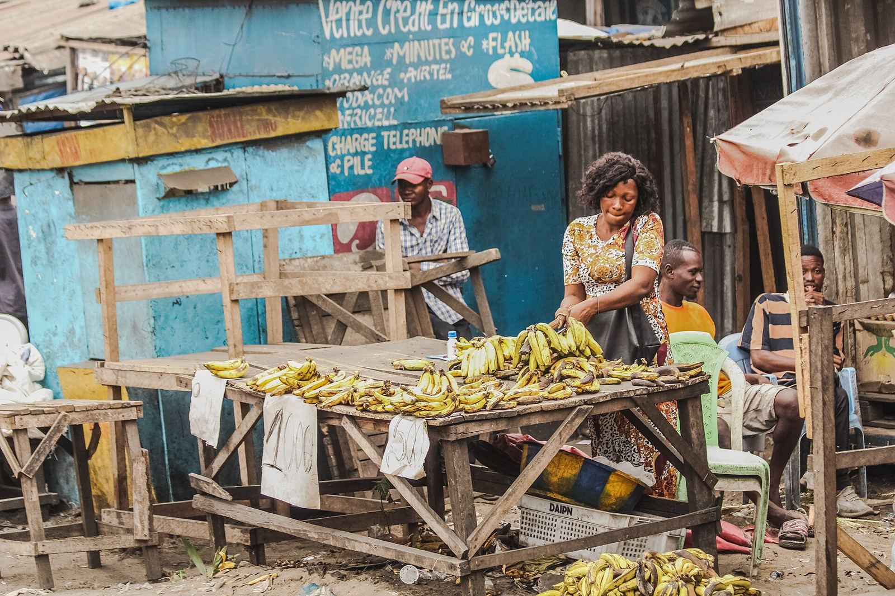

Une foi qui agit
au cœur des communautés
Africa Services RDC (AFSRDC) est une organisation internationale à base de foi chrétienne intervenant dans le relief, la santé mentale et le soutien psychosocial, le développement socio-économique et l'éducation.
Restaurer les vies et transformer les communautés
Nous croyons que chaque personne, même au plus fort de la crise, porte en elle une dignité et un potentiel que Dieu veut restaurer.
Nés de l'engagement d'églises et de leaders congolais face aux crises humanitaires répétées dans l'Est de la RD Congo, nous intervenons là où les besoins sont les plus aigus, en alliant réponse d'urgence, accompagnement du cœur et de l'esprit, et relèvement durable.

Notre vision
Voir des hommes et des femmes restaurés, fortifiés dans leur foi, résilients, pleins de ressources, transformant leur communauté immédiate, témoins de l'amour du Christ.
Notre mission
Manifester l'amour du Christ en accompagnant les communautés chrétiennes vulnérables et leurs communautés immédiates vers la guérison, la résilience et un développement durable.
Notre engagement
Restaurer l'espérance, renforcer les capacités locales et créer des conditions favorables à une vie épanouie spirituellement, socialement et économiquement.
Ce que nous voulons accomplir
- Secourir les personnes déplacées et vulnérables en répondant à leurs besoins immédiats avec dignité.
- Guérir les blessures invisibles par la santé mentale et le soutien psychosocial.
- Former des leaders chrétiens intègres, responsables et visionnaires.
- Relever les familles par l'autonomisation économique et la formation professionnelle.
- Instruire les enfants et les jeunes affectés par les crises.

Ce qui guide chacune de nos actions
Nos valeurs découlent de notre foi et façonnent notre manière de servir, de travailler en équipe et de rendre compte.
Foi
Notre action est enracinée dans l'amour du Christ et dans l'espérance qu'il offre à chacun.
Compassion
Nous nous tenons aux côtés des plus vulnérables, avec humilité et sans discrimination.
Intégrité
Transparence et redevabilité envers les communautés, les partenaires et les donateurs.
Leadership serviteur
Diriger, c'est servir : nous formons et agissons selon cet exemple.
Dignité
Chaque personne est créée à l'image de Dieu ; nous la considérons comme actrice de son relèvement.
Partenariat
Nous travaillons avec les églises locales, les leaders et les acteurs humanitaires.
De l'urgence à l'autonomie
Une approche intégrée, centrée sur la personne et ancrée dans la communauté, qui relie l'aide immédiate au développement durable.
Écouter & évaluer
Évaluations participatives des besoins avec les communautés, les églises et les autorités locales.
Secourir
Assistance d'urgence rapide et digne : vivres, abris, articles essentiels, protection.
Restaurer
Soutien psychosocial et spirituel pour guérir les traumatismes et reconstruire le lien social.
Autonomiser
Formation, moyens de subsistance et leadership pour une résilience durable.

Nos principes de travail
- Approche « do no harm » et respect des principes humanitaires
- Participation des bénéficiaires à chaque étape du projet
- Ancrage local à travers les églises et structures communautaires
- Protection des personnes vulnérables, en particulier enfants et femmes
- Suivi, évaluation et redevabilité rigoureux

Rejoignez la mission
Votre don, votre temps ou vos prières peuvent changer une vie.